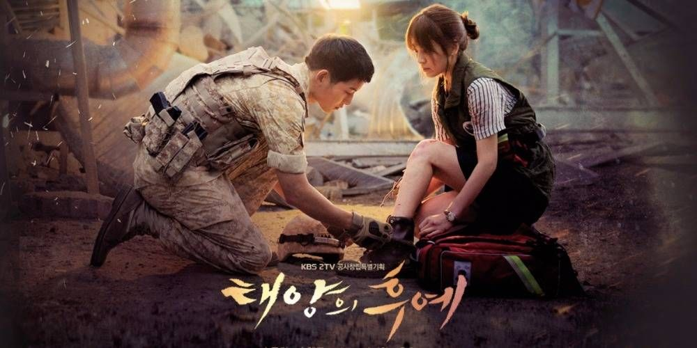
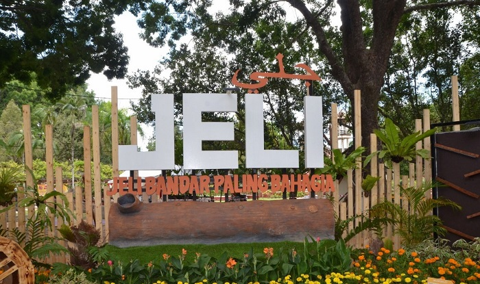
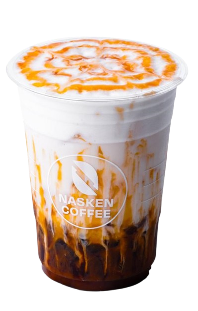
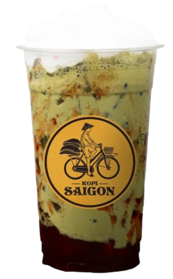
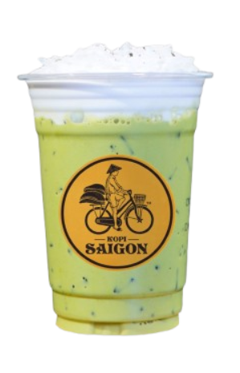
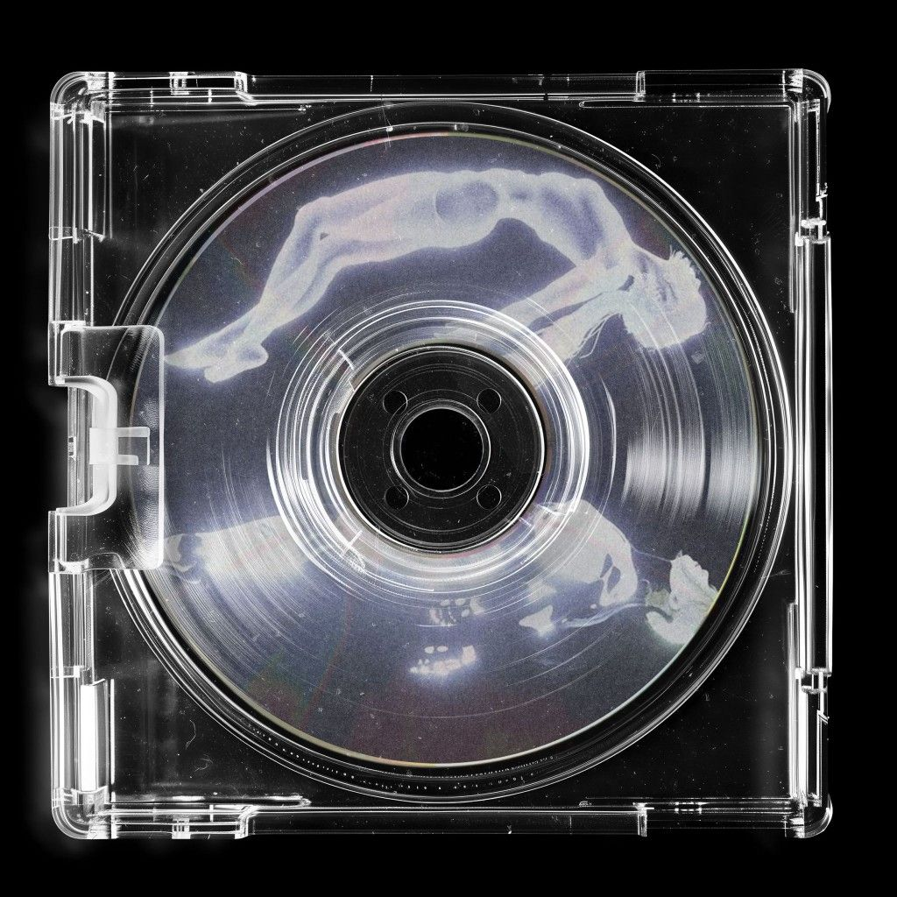
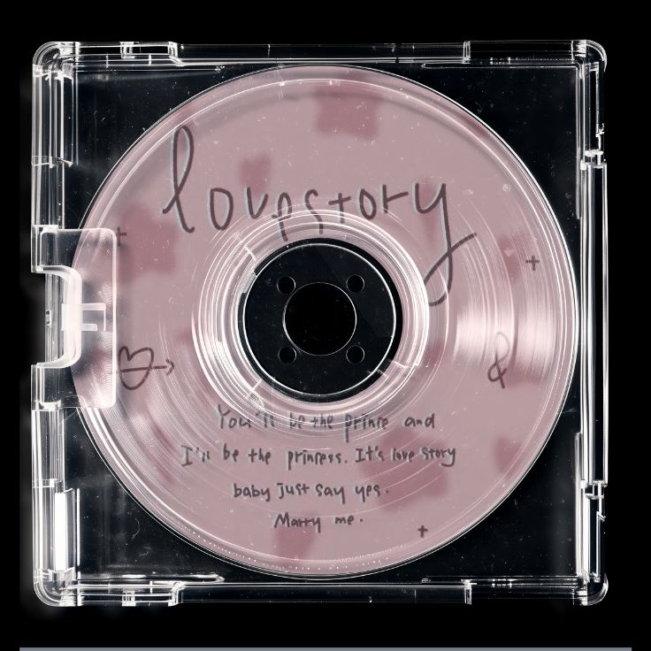
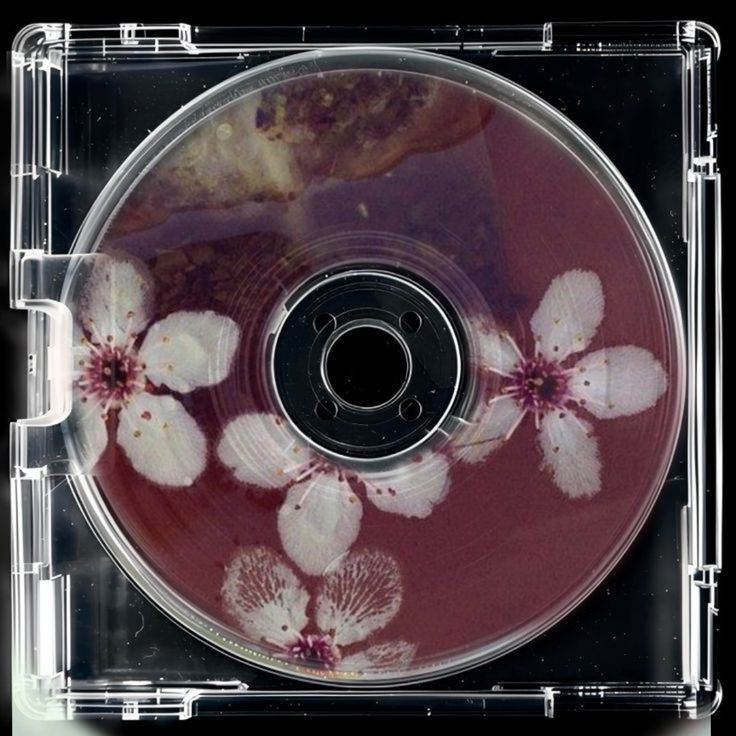

ABOUT ME


During my free time, I genuinely enjoy cooking. I love experimenting with new recipes and learning different cooking techniques. Preparing meals for others is something that brings me joy, and seeing people appreciate the food I make motivates me to continue improving my skills in the kitchen.

In my free time, I enjoy watching K-Dramas, and my first favourite was Descendants of the Sun. I love exploring different genres, from romance and comedy to action and thriller. Each drama has its own unique storyline, emotional depth, and inspiring characters, which makes the experience even more meaningful.

I was born at Jeli Hospital and raised in Jeli, a district that was once part of Tanah Merah before being officially established as a full district in 1986. I am proud to be a true Kelantanese because this state is not only peaceful, but also rich with unique and delicious local foods that reflect its vibrant culture. Jeli itself is filled with natural beauty from its rivers and waterfalls to its well-preserved forests making it a truly special place to call home.
 MATCHA LATTE
MATCHA LATTE
 SPANISH LATTE
SPANISH LATTE

SALTED CARAMEL
MATCHA STRAWBERRY
MATCHA LATTE

